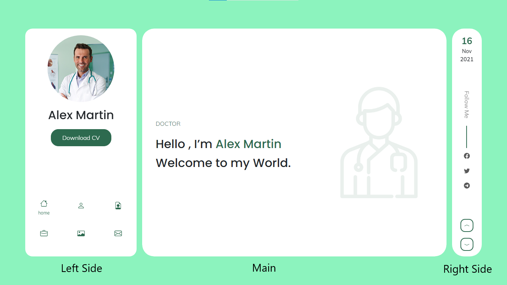

Arshia PLUS Documentation
Welcome
Thanks for your purchasing arshia HTML Template.Although this template is very easy to customize, We provide you a simple but useful documentation for your problems with customization.
In this template we put comment for all sections in HTML files, All sections styles in CSS files and all sections JQuery in arshia JS file.
How to change BACKGROUND IMAGES?
We have putted background images in "style.css" file. if you search 'url' word on "style.css" file you will find all background images that we used on this template. They have defined with "https://placehold.co/1920x1280". You need replace your image with "../img/yourImageName" address instead of "https://placehold.co/1920x1280".
How to change COLOR?
We have pre built 10 different colors that you see in "colors" folder. We called them like below codes in "head" tag :
If you want one of 10 pre built colors just call it instead of "green.css" in top codes on your HTML file. If You want to have your individual color, just copy one of pre build color.css files and replace your color name, hex or rgb instead of colors on that file and rename it with your color name.
If you want COLORFULL version you can see file in Colorfull_version Folder
How to swtich DARK?
If you want to use DARK mode, you just add "dark-arshia" class name to "body" tag. We called them like below codes in "body" tag :
<body class="dark-arshia">
<body class="test-class sample-class dark-arshia">
If you want one of 4 pre built colors just call it instead of "green.css" in top codes on your HTML file. If You want to have your individual color, just copy one of pre build color.css files and replace your color name, hex or rgb instead of colors on that file and rename it with your color name.
HTML Structure
The template is based on Bootstrap 5.1.3 Framework - http://getbootstrap.com
Bootstrap includes a responsive, mobile first fluid grid system that appropriately scales up to 12 columns as the device or viewport size increases.
<div class="row">
<div class="col-md-12">
Level 1 column
<div class="row">
<div class="col-md-6">Level 2</div>
<div class="col-md-6">Level 2</div>
</div>
</div>
</div>
If you need more information, please visit this site: https://getbootstrap.com/docs/5.0/layout/grid/
We Have 3 Basic parts in our demo that contains "LEFT SIDE" , "MAIN" and "RIGHT SIDE" that has been shown in below iamge
We have different Demos, U can choose one of them base on your requirement.
for better understanding you can see code below.
.
.
.
.
.
.
.
.
.
Portfolio
In arshia HTML template files we have different sections.
In portfolio section, Images are in different categories.
To know how to do this, watch codes below and the description after that.
In "a" tags we have "data-filter" property, The value of this filters use for items that we want to be in a category. for example ".webdesign" use for portfolio Items that are in web design category. You can use multiple values in one item. "*" value select all items.
Fonts
Here We have two types of fonts. First is Google Fonts and The other is Font Icons
We pick our fonts from Google Fonts . In this website you can learn how to pick your favorite font and use that in your website template.
Our Font Icons are from Bootstrap Icons . In this website you can learn how to pick your favorite font icon and use that in your website template. But if you want customize your social icons or another Icons you can see the codes below
In "Social Icons" you can see "i" tags. In their class you see "bi bi-facebook " and others. In Bootstrap Icons wbesite you can pick your icon name and put it to class of "i" tag. We copy them below to show better.
Images
Images makes templates more beautiful and useful. In arshia HTML templates we have Slider, Background, Banner, Portfolio, Blog and ... Images.
Images comes with "img" tag in HTML files. You can put your image URL in this tag and see that on your website.
You can see some sample "img tags" in "Portfolio Section" below
.
.
 .
.
.
.
.
.
.
.
 .
.
.
.
.
.
.
.
.
.
.
.
"alt" In "img" tag is the name of image for search engines and browsers. When a browser can't show image, user see the name in "alt" and know what image was in this section.
We put "/" in "alt" in "img" tags because of this is only a demo template. But you must put your images name because of SEO and your users.
Images URL in portfolio section items are in two tags, first is "img" tags and other is "a" tags. We described "img" tags in top, But what is "a" tags here and what is their usage?
CSS Structure
HTML is the structure of a template and CSS is the design. In CSS we paint and make codes beautiful.
In arshia HTML template CSS files, we use some libraries and make them powerful and more beautiful in Style CSS file.
"Table of contents" In Style CSS file help you to find each section styles and you can change or customize them there.
Main CSS
"General Styles" are important styles that we want use them in all template design in "Style CSS" file. But there are some styles that we don't want use general styles them. Because of this reason we use "General Styles" in top of all styles in "Style CSS" file. browsers read styles line by line and if you have to class with same styles but variation data browsers read second class. you can see an image of "General Styles" below
/*-----------------------------------------------------------
* Template Name : Arshia | Bootstrap 5 Responsive Personal V-Card Resume HTML Template
* Author : Retrina Group
* Version : 1.0.0
* Created : November 2021
* File Description : Main css file of the template
*------------------------------------------------------------
*/
/*--------------------------------
1.GENERAL
2.PRELOADER
3.OVERLAY MENU
4.RIGHT SIDE
5.LEFT SIDE
6.NEXT & PREV PAGE
7.HERO SECTION
8.ABOUT SECTION
9.SKILLS
10.LANGUAGE SKILL
11.SERVICES
12.RESUME
13.TESTIMONIALS
14.PORTFOLIO
15.BLOG
16.CONTACT
17.PORTFOLIO SINGLE
18.BLOG SINGLE
19.BACKGROUND ANIMATION
20.RESPONSIVE MEDIA
--------------------------------*/
/*------------------------- GENERAL -------------------------*/
body {
font-family: "Muli", sans-serif;
font-weight: 300;
overflow: none;
height: 100vh;
background-size: 100%;
}
.full-screen {
height: 100vh;
}
h1,h2,h3,h4,h5,h6 {
font-family: "Poppins", sans-serif;
line-height: 1.618;
}
a,a:hover {
text-decoration: none !important;
}
a,a:hover,button {
outline: none !important;
}
Top image is from "style.css" file
Fonts in css
Fonts are very important for making template and text more and more beautiful. Then we should use them in CSS files. After picking one or more fonts from Google Fonts, that website show you how to use them in your template or website. We bring an example for you from "General Styles" of "style.css"
/*-------------------------
GENERAL
-------------------------*/
body{
font-family: 'Muli', sans-serif;
}
h1,
h2,
h3,
h4,
h5,
h6{
font-family: 'Poppins', sans-serif;
}
After all font families put a Backup font because sometimes some browsers can't support your font and try to read backup font at last if browser cant't read none of fonts will read "sans-serif" font.
Images in css
Images in CSS are different from HTML. We often use CSS for background images and define their width, height, position and ... . We bring background images styles from "style.css" for you below.
/*------------------------
HERO
-------------------------*/
.hero {
background: url("../img/arshia.jpg") no-repeat;
background-size: cover;
}
When we want bring an image for background in "Style CSS" we use "background-image: url(sample/img/image.jpg)". But when we want to use another properties after images URL we must change "background-image" to "background".
Media Screens
Bootstrap includes a responsive, mobile first fluid grid system that appropriately scales up to 12 columns as the device or viewport size increases. But sometimes text, images or ... don't work good in some screens. Because of this web designers and developers use "Media Screens" in CSS files to solve this problem. In arshia template CSS we use some media screens to make our theme fully responsive for all screens. You can see an example from "style.css" of arshia template below.
/*-------------------------
MEDIA SCREENS
-------------------------*/
@media (max-width: 991px) {
.mCSB_scrollTools {
top: 3%;
bottom: 11%;
right: 10px;
}
#main {
border-radius: 16px !important;
left: 50%;
transform: translateX(-50%);
width: 92% !important;
height: 94%;
top: 3%;
z-index: 2;
}
#main>section {
padding: 3rem 0 3rem 1rem !important;
border-radius: 16px !important;
}
}
@media (max-width: 767px) {
.mCSB_scrollTools {
right: 5px;
}
}
@media (max-width: 575px) {
.menu-toggle {
border-radius: 16px;
}
.menu li a:hover i,.menu li a.active i {
transform: translateY(-10px);
}
.menu a:hover span, .menu a.active span {
transform: translateY(10px);
}
.blog-single .comments ul {
margin-left: 30px;
}
.blog-single .children{
margin-left: 0 !important;
}
#main>section , #main{
border-radius: 16px !important;
}
.testimonial .testimonial-comment{
font-size: 20px;
font-weight: 400;
}
}
Javascript
After finishing template structure (HTML) and give that a beautiful design (CSS) we should give our template Mobility. We do this Important factor with "Java Script" and that awesome library "JQuery". arshia HTML template use beautiful and useful Java scripts like Owl Carousel (for sliders), Isotop JS and ... for users and customers. using and customize this template scripts are very easy and we describe important thing and options.
arshia JS File
"arshia.js" is arshia HTML Template main JavaScript file that all libraries are customize and ready for run there.
Open Menu:
Open Menu is an Animation script for "main" tag and div has "left-side" class when first child or last child of menu in left side is active.
/*------------------------- Open Menu -------------------------*/
function openMenu() {
"use strict";
var childrenCount = $(".left-side .menu .list-group-item").length;
var windowWidth = $window.width();
if (windowWidth > 991) {
$(".menu-align").animate({
position: "absolute",
height: "160px",
width: "300px",
position: "absolute",
bottom: "0"
}, 700);
$(".left-side .menu").animate({
height: "100%",
width: "100%"
}, 600);
$("#main").animate({
width: (windowWidth * 9 / 10) - 410 + 'px',
left: (windowWidth * 5 / 100) + 315 + 'px'
}, 700);
} else {
$(".menu-align").animate({
position: "absolute",
height: "46%",
width: "300px",
position: "absolute",
bottom: "0",
left: "50%",
transform: "translateX(-50%)"
}, 700);
}
$(".left-side").animate({
width: "300px"
}, 700);
$(".left-side img").animate({
width: "180px"
}, 700);
$(".left-side h1").animate({
'font-size': "32px"
}, 700);
$(".left-side a.download-cv").show();
$(".left-side a.download-cv").animate({
"opacity": "1",
'font-size': "16px",
padding: "10px 30px"
}, 700);
for (var i = 0; i < childrenCount; i++) {
$(".left-side .menu").children().eq(i).animate({
left: (i % 3) * 100 + "px",
top: Math.floor(i / 3) * 75 + "px",
width: "100px"
}, 600);
}
}
Close Menu:
Close Menu is an Animation script for "main" tag and div has "left-side" class when first child or last child of menu in left side is not active.
/*------------------------- Close Menu -------------------------*/
function closeMenu() {
"use strict";
var childrenCount = $(".left-side .menu .list-group-item").length;
var customHeight = 100 / childrenCount;
var windowWidth = $window.width();
if (windowWidth > 991) {
$(".menu-align").animate({
height: "75%",
width: "100%"
}, 600);
$(".left-side .menu").animate({
height: "100%",
width: "100%"
}, 600);
$(".left-side").animate({
width: "80px"
}, 600);
$(".left-side img").animate({
width: "60px"
}, 600);
$(".left-side h1").animate({
'font-size': "12px"
}, 600);
$(".left-side a.download-cv").animate({
opacity: "0",
'font-size': "0",
padding: "0",
border: "0"
}, 600);
$(".left-side a.download-cv").attr('style', 'display:none !important');
for (var i = 0; i < childrenCount; i++) {
$(".left-side .menu").children().eq(i).animate({
left: "0",
top: customHeight * i + "%",
width: "80px"
}, 600);
}
$("#main").animate({
width: (windowWidth * 9 / 10) - 190 + 'px',
left: (windowWidth * 5 / 100) + 95 + 'px'
}, 600);
$("#main>section.active").animate({
width: (windowWidth * 9 / 10) - 190 + 'px'
}, 600);
} else {
openMenu();
}
}
Owl Carousel Js :
Touch enabled jQuery plugin that lets you create a beautiful responsive carousel slider. Owl Carousel is a neat little carousel with all the perks you could possibly need.
/*------------------------- Testimonial Owlcarousel -------------------------*/
function owlCrousel() {
"use strict";
var counter = 1;
if ($("#main > section.active").attr('id') == 'about') {
setInterval(function() {
counter--;
if (counter == 0) {
$(".owl-carousel").owlCarousel({
items: 1,
padding: 0,
nav: false,
autoplay: false,
loop: true,
dots: true,
mouseDrag: true,
touchDrag: true,
smartSpeed: 1000,
autoplayHoverPause: true,
});
}
}, 1000);
}
}
Isotope js :
Isotope js is a JavaScript library that makes it easy to sort, filter, and add Masonry layouts to items on a webpage. ... In short, isotope adds interactivity to your layouts without requiring assistance from a server.
/*------------------------- ISOTOPE JS -------------------------*/
function portfolioIsotop() {
"use strict";
// init Isotope
var $pfilter = $('#portfolio-filter');
var $grid = $('.portfolio-items');
$grid.isotope({
itemSelector: '.portfolio-item',
layoutMode: 'masonry',
});
$pfilter.find('a').on("click", function() {
var filterValue = $(this).attr('data-filter');
$pfilter.find('a').removeClass('active');
$(this).addClass('active');
$grid.isotope({
filter: filterValue,
});
// updateFilterCounts();
return false;
});
}
CountUp Js :
CountUp.js is a dependency-free, lightweight Javascript class that can be used to quickly create animations that display numerical data in a more interesting way. Despite its name, CountUp can count in either direction, depending on the start and end values that you pass.
Download the latest version from github and include it to your page using script tag
/*------------------------- Count up -------------------------*/
function countup() {
"use strict";
var hT = $('.count-up').offset().top,
hH = $('.count-up').outerHeight(),
wH = $(window).height(),
wS = $(window).scrollTop();
if (wS > (hT + hH - wH)) {
$('.timer').countTo();
$('.count-number').removeClass('timer');
}
}
Credits
- jQuery v3.4.1 : https://jquery.com
- Bootstrap v5.1.3 : http://getbootstrap.com
- Bootstrap Icons v1.7.0 : https://icons.getbootstrap.com/
- Isotope Packaged v3.0.6 : http://isotope.metafizzy.co
- Owl Carousel v2.3.4 : https://owlcarousel2.github.io/OwlCarousel2
- countTo v2.3.4 : https://github.com/mhuggins/jquery-countTo
- Malihu Custom Scrollbar v3.1.13 : http://manos.malihu.gr/jquery-custom-content-scroller
- Images From : http://www.unsplash.com and https://www.freepik.com
Thanks for choosing us.
Copyright © 2021. Template has been designed by Retrina